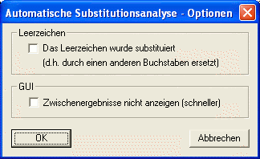
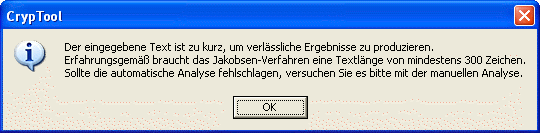
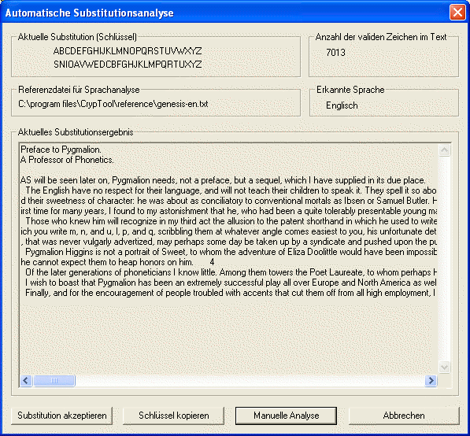

Einleitung
Automatische Kryptoanalyse nach Methode 1
Spracherkennung
Automatische Kryptoanalyse nach Methode 2
Benutzung
Bekannte Einschränkungen
In CrypTool sind zwei Verfahren zur automatischen Kryptoanalyse monoalphabetischer Substitutionschiffren implementiert.
Das alte (und schwächere) Verfahren (nun Methode 2 genannt) basiert auf der Erkennung der häufigsten Wörter einer Sprache und hat u.a. folgende Einschränkungen: Keine automatische Spracherkennung, Notwendigkeit zum Erhalten der Leerzeichen im Chiffretext, keine Unterscheidung der Groß-/Kleinschreibung.
Die neue Implementierung (jetzt genannt Methode 1) basiert auf der Arbeit von Thomas Jakobsen "A Fast Method for the Cryptanalysis of Substitution Ciphers" (Cryptologia 19:3, 1995). Dieses neue Verfahren sollte folgende Vorteile mit sich bringen:
Der Algorithmus arbeitet auf dem lateinischen Alphabet mit 26 Buchstaben (A...Z). Das feste Verschlüsselungsalphabet kann durch das Leerzeichen erweitert werden, so dass das Leerzeichen wie andere Buchstaben verschlüsselt (d.h., auf einen anderen Buchstaben abgebildet) wird. Umlaute, Satzzeichen und Sonderzeichen werden standardmäßig beibehalten. Ebenso wird die Groß-/Kleinschreibung bei der Entschlüsselung des Textes beibehalten.
Des Weiteren wurde die neue Implementierung um einen Algorithmus zur automatischen Spracherkennung erweitert. Das implementierte Verfahren basiert auf der Berechnung der Zeichenkoinzidenz (englisch: "index of coincidence", nach W. F. Friedman, 1922).
Das implementierte Kryptoanalyseverfahren führt eine Häufigkeitsanalyse des Textes durch, wobei die Häufigkeitsverteilungen einzelner Buchstaben und Digramme im Chiffretext berechnet werden. Die Häufigkeitsverteilung einzelner Buchstaben wird zum Errechnen des Initialwerts für den Schlüssel benutzt. Die Häufigkeitsverteilung der Digramme wird für die Güteberechnung des jeweiligen Schlüssels verwendet. Das Verfahren basiert auf einem schnellen Algorithmus, der am Anfang der Kryptoanalyse eines Chiffretextes einen Initialwert für den Schlüssel errechnet und in folgenden Iterationen diesen Schlüssel verfeinert. In jeder Iteration wird entschieden, ob die Verfeinerung des Schlüssels einen "besseren" Wert gebracht hat und wenn ja, wird dieser Wert für die weitere Berechnung übernommen.
Die höhere Geschwindigkeit des Verfahrens auf einer Verteilungsmatrix für Digramme. Bei der Schlüsselsuche werden die Häufigkeiten einzelner Buchstaben berücksichtigt.
Die Berechnung der "Güte" des Schlüssels basiert auf dem Vergleich der Digramm-Häufigkeitsverteilung des vorliegenden Chiffretextes mit der Häufigkeitsverteilung der Referenztexte in der Zielsprache (in unserem Fall Englisch bzw. Deutsch). Der Abweichungswert wird durch das Aufsummieren der Abweichungen aller einzelnen Digramme berechnet. Je kleiner dieser Wert ist, um so "besser" ist der Entschlüsselungsschlüssel. Im Idealfall sollte gar keine Abweichung beider Verteilungen festzustellen sein. Dies kommt jedoch in der Praxis kaum vor, da jeder Text seine eigene Häufigkeitsverteilung der Digramme besitzt, die sich von der Referenzverteilung unterscheidet. Die Strategie des Algorithmus ist somit die Minimierung der vorhandenen Abweichung.
Die vorliegende Implementierung benutzt als Referenzdatei die CrypTool Referenzdatei für statistische Auswertungen, die über den Menüeintrag Optionen \ Textoptionen gefunden werden kann.
Laut dem Autor des Algorithmus (Thomas Jacobsen) ist dieses Verfahren erheblich schneller als andere bekannte Verfahren wie Carroll-Robbins und King-Bahler. Der Algorithmus soll nach Angaben des Autors in 98% aller Fälle erfolgreich sein (bezogen auf 400 Zeichen lange Chiffretexte).
Die Unterscheidung, in welcher Sprache ein Chiffretext ursprünglich verfasst war, ist leichter als die Kryptoanalyse dieses Textes ohne Kenntnis des Schlüssels. Dies wurde bereits 1922 von W. F. Friedman gezeigt. Zur Bestimmung der Sprache wird die sogenannte Zeichenkoinzidenz verwendet, deren Wert charakteristisch für eine bestimmte Sprache ist. Die Zeichenkoinzidenz wird über die Häufigkeiten des Auftretens einzelner Zeichen im Chiffretext berechnet.
An dieser Stelle sei erwähnt, dass auch die Sprachenerkennung, die auf der Berechnung der Zeichenkoinzidenz basiert, nicht immer genaue Ergebnisse liefern kann. Der Grund hierfür ist die Streuung der Buchstabenhäufigkeiten für verschiedene Texte, die sich deutlich von Referenzwerten einer Sprache unterscheiden können.
Hier wird versucht, die häufigsten Worte einer Sprache auf die Worte im gegebenen Ciphertext zu matchen.
Voraussetzung ist, dass die Wortgrenzen durch Satz- oder Leerzeichen vorhanden sind.
Zuerst wird dem Benutzer über folgenden Dialog ermöglicht, den neuen (Methode 1) oder alten (Methode 2) Algorithmus zur Substitutionsanalyse auszuwählen:
Standardmäßig ist der neue Algorithmus selektiert (Digramm-Analyse). Nach dem Start des neuen Algorithmus wird folgender Dialog präsentiert, in dem der Benutzer Einstellungen für die bevorstehende Kryptoanalyse vornehmen kann.

Benutzer können im Optionendialog angeben, ob das Leerzeichen im verschlüsselten Text mit einem anderen Buchstaben substituiert wurde (d.h. das Leerzeichen gehört dann zum Verschlüsselungsalphabet). Zusätzlich kann der Benutzer das Analyse-GUI für die Berechnungszeit komplett ausschalten und sich nur das Endergebnis anzeigen lassen. Die Aktivierung dieser Option bringt einen Geschwindigkeitszuwachs mit sich, da nicht jeder erfolgreich entschlüsselte Text und auf dem Bildschirm ausgegeben werden muss.
Ist der zu analysierende Text zu kurz (weniger als 300 zum Alphabet gehörende Zeichen), erscheint die folgende Warnung:

Das Endergebnis wird in einem weiteren Fenster angezeigt (nächstes Bild). Wurde das GUI im Einstellungsdialog nicht deaktiviert, werden die aktuellen Berechungen in demselben Fenster angezeigt, wobei die Anzeige ständig aktualisiert wird, wenn ein "besserer" Schlüssel gefunden wurde. Auf diese Weise kann der Benutzer die Kryptoanalyse dynamisch mitverfolgen.

Der Benutzer kann den aktuellen Substitutionsschlüssel in den
internen Schlüsselspeicher kopieren, indem
er auf Button Schlüssel kopieren klickt.
Der Benutzer hat auch die Möglichkeit, das Ergebnis der automatischen Substitutionsanalyse durch manuelle Analyse selbst weiter zu verbessern:
Durch das Klicken auf den Button Manuelle Analyse gelangt man zum Dialog
die manuelle Analyse für monoalphabetische Substitution. Das Ergebnis der automatischen Analyse wird als Grundlage
für die manuelle Analyse übernommen.
Wird die Substitution vom Benutzer akzeptiert, öffnet sich ein weiteres Dokumentfenster, das den entschlüsselten Text enthält. Dieser kann dann vom Benutzer abgespeichert werden.
Die größte Einschränkung für die implementierten Verfahren stellt die Länge des vorliegenden Chiffretextes dar. Wie bei allen auf der Häufigkeitsanalyse basierenden Verfahren muss der vorliegende Text ausreichend lang sein, um eine Häufigkeitsanalyse überhaupt zu ermöglichen. Die implementierten Verfahren eignen sich somit schlechter für die Kryptoanalyse kurzer Texte. Laut dem Autor des Verfahrens wird die maximale Erfolgsrate bei Chiffretexten ab 300-400 Zeichen erreicht (98%). Die Erfolgsrate bei Texten mit 100 bis 200 Zeichen liegt zwischen 50% und 80%.